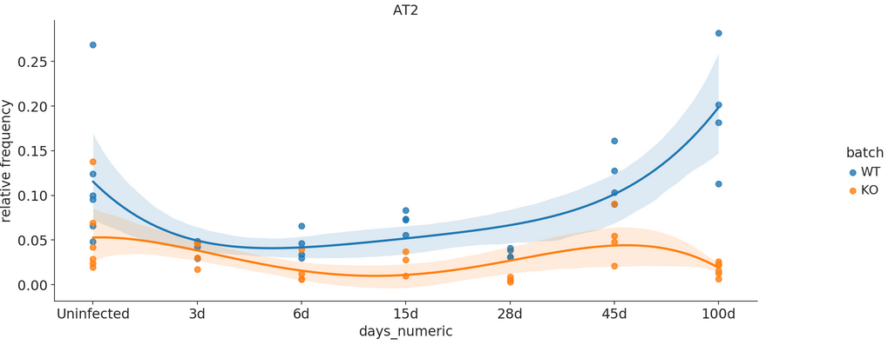
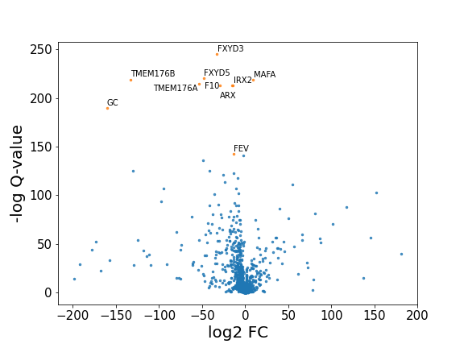

Usage¶
API¶
Import the sc-tools API as follows:
import sc_toolbox.api as sct
You can then access the respective modules like:
sct.plot.cool_fancy_plot()
Plots¶
-
class
sc_toolbox.api.plot.Colormaps(value)[source]¶ - Available colormaps:
- grey_redgrey_violetgrey_blue
-
sc_toolbox.api.plot.average_expression(gene_expression, genes, order, xlabel='days', cluster='all', hue=None, figsize=(15, 6), smooth=None, rotation=None, order_smooth=None, conf_int=None, scatter=None, save=None)[source]¶ Draw a line plot showing the average gene expression over time.
- Parameters
gene_expression –
genes –
order (List[str]) – Order of x-axis labels from left to right
xlabel (str) – x-axis label
cluster (str) – Which clusters to plot. Select ‘all” if all clusters should be drawn.
hue – Which value to color by
figsize (Tuple[int, int]) – Size of the figure as specified in matplotlib
smooth –
rotation (Optional[int]) –
order_smooth –
conf_int –
scatter –
save (Optional[str]) – Path to save the plot to
- Example smooth:

- Example raw:

-
sc_toolbox.api.plot.average_expression_per_cell(gene_expression, genes, order, xlabel='days', cluster='all', hue=None, figsize=(15, 6), smooth=None, rotation=None, tick_size=12, label_size=15, order_smooth=None, conf_int=None, scatter=None, cols=None, save=None)[source]¶ Plots the average gene expression as a line plot per cell. Ideally used when the scatter point should not be sample wise, but cell wise. :param gene_expression: :param genes: :param order: :param xlabel: x-axis label :param cluster: :param hue: Value to color by :param figsize: Size of the figure as specified in matplotlib :param smooth: :param rotation: :param tick_size: Size of the ticks as specified in matplotlib :param label_size: Size of the labels as specified in matplotlib :param order_smooth: :param conf_int: :param scatter: :param cols: :param save: Path to save the plot to
- Parameters
xlabel (str) –
cluster (str) –
figsize (Tuple[int, int]) –
save (Optional[str]) –
-
sc_toolbox.api.plot.average_expression_per_cluster(gene_expression, genes, order, obs=None, xlabel='days', cluster='all', hue=None, figsize=(15, 6), smooth=None, rotation=None, tick_size=12, label_size=15, order_smooth=None, conf_int=None, scatter=None, save=None)[source]¶ Plots gene expression over time split by cluster identity. One line per cluster.
- Parameters
gene_expression –
genes –
order –
obs –
xlabel (str) – x-axis label
cluster (str) –
hue –
figsize (Tuple[int, int]) – Size of the figure as specified in matplotlib
smooth –
rotation –
tick_size (int) – Size of the ticks as specified in matplotlib
label_size (int) – Size of the labels as specified in matplotlib
order_smooth –
conf_int –
scatter –
save (Optional[str]) – Path to save the plot to
-
sc_toolbox.api.plot.average_expression_split_cluster(gene_expression, genes, order, xlabel='days', hue='genotype', cluster=None, figsize=(15, 6), smooth=None, rotation=None, cols=None, tick_size=12, label_size=15, order_smooth=None, conf_int=None, scatter=None, save=None)[source]¶ Plot average gene expression as line plots for multiple clusters at once.
- Parameters
gene_expression –
genes –
order –
xlabel – x-axis label
hue – Value to color by
cluster –
figsize – Size of the figure as specified in matplotlib
smooth –
rotation – x-axis label rotation
cols –
tick_size – Size of the ticks as specified in matplotlib
label_size – Size of the labels as specified in matplotlib
order_smooth –
conf_int –
scatter –
save – Path to save the plot to
- Example smooth:

- Example raw:

-
sc_toolbox.api.plot.cluster_composition_stacked_barplot(relative_frequencies, xlabel='name', figsize=(6, 10), width=0.8, order=None, error_bar=None, label_size=15, tick_size=13, capsize=None, margins=(0.02, 0.04), cols=None, save=None)[source]¶ Plot relative frequencies as a stacked barplot.
- Parameters
relative_frequencies (pandas.core.frame.DataFrame) –
xlabel (str) – x-axis label
figsize (Tuple[int, int]) – Size of the figure as specified in matplotlib
width (float) – Width of the desired plot
order –
error_bar –
tick_size (int) – Size of the ticks as specified in matplotlib
label_size (int) – Size of the labels as specified in matplotlib
capsize (Optional[int]) –
margins (Tuple[float, float]) –
cols –
save (Optional[str]) – Path to save the plot to
Example:
-
sc_toolbox.api.plot.colors_overview(colors, ncols=2, figsize=(8, 5), save=None)[source]¶ Draw an overview plot of all used colors
- Parameters
colors (Dict) – Dictionary of color name and color
ncols (int) – How many columns for the plot
figsize (Tuple[int, int]) – Size of the figure as specified in matplotlib
save (Optional[str]) – Path to save the plot to
Example

-
sc_toolbox.api.plot.custom_plot_size(width, height, dpi)[source]¶ Create a custom axis object of desired sizes.
- Parameters
width (int) – Desired plot width
height (int) – Desired plot height
dpi (int) – Desired plot DPI.
Returns: Axis of desired sizes
-
sc_toolbox.api.plot.gene_boxplot(table, palette, xlabel='cell_types', hue=None, figsize=(10, 5), legend=True, score='Axin2', scatter=None, rotate=False, width=0.7, save=None)[source]¶ Plot gene values as split boxplots
- Parameters
table – Pandas DataFrame
palette (List[str]) –
xlabel (str) – x-axis label
hue (Optional[str]) –
figsize (Tuple[int, int]) – Size of the figure as specified in matplotlib
legend – Whether to draw a legend or not
score –
scatter –
rotate –
width – Width of the desired plot
save – Path to save the plot to
Example
-
sc_toolbox.api.plot.gene_expression_dpt_ordered(data, genes, xlabel, order=3, ci=95, figsize=(12, 6), condition=None, label_size=15, cols=None, scale=None, ylim=None, save=None)[source]¶ Plot smoothed expression of all cells ordered by pseudotime.
- Parameters
data – AnnData object
genes –
xlabel – x-axis label
order –
ci –
figsize (Tuple[int, int]) – Size of the figure as specified in matplotlib
condition –
label_size (int) –
cols –
scale –
ylim –
save (Optional[str]) – Path to save the plot to
Example

- Example with columns:
-
sc_toolbox.api.plot.marker_dendrogram(marker, threshold=0.7, column='cluster', label_size=10, orient='top', figsize=(10, 4), save=None)[source]¶ Plots a dendogram of used marker genes.
- Parameters
marker –
threshold (float) –
column (str) –
label_size (int) –
orient (str) –
figsize (Tuple[int, int]) – Size of the figure as specified in matplotlib
save (Optional[str]) – Path to save the plot to
Example

-
sc_toolbox.api.plot.relative_frequencies_boxplots(relative_frequencies, cluster, cols, order, xlabel='days', hue='batch', figsize=(15, 6), width=0.5, jitter=None, save=None)[source]¶ Plots the relative frequencies as split boxplots. Use calc_relative_frequencies to get the required input format.
- Parameters
relative_frequencies (pandas.core.frame.DataFrame) – Calculated by calc_relative_frequencies as Pandas DataFrame
cluster –
cols –
order –
xlabel (str) – x-axis label
hue (str) – Value to color by
figsize (Tuple[int, int]) – Size of the figure as specified in matplotlib
width (float) – Width of the plot as specified in matplotlib
jitter –
save – Path to save the plot to
Example

-
sc_toolbox.api.plot.relative_frequencies_lineplot(relative_frequencies, order, cluster, xlabel='days', ylabel='relative frequency', hue=None, smooth=None, cols=None, title=None, rotation=None, figsize=(15, 5), tick_size=None, label_size=None, order_smooth=3, conf_int=None, scatter=None, save=None)[source]¶ Plot relative frequencies as a line plot.
- Parameters
relative_frequencies (pandas.core.frame.DataFrame) – Pandas Data
order –
cluster –
xlabel (str) – x-axis label
ylabel (str) – y-axis label
hue (Optional[str]) – Value to color by
smooth (Optional[bool]) – Whether to smoothen the plot
cols –
title (Optional[str]) – Title of the plot
rotation (Optional[int]) – Rotation of the x-axis labels
figsize (Tuple[int, int]) – Size of the figure as specified in matplotlib
tick_size (Optional[int]) – Size of the ticks as specified in matplotlib
label_size (Optional[int]) – Size of the labels as specified in matplotlib
order_smooth (int) –
conf_int –
scatter –
save (Optional[str]) – Path to save the plot to
Example

-
sc_toolbox.api.plot.split_boxplot(table, order, xlabel, ylabel, column=None, hue=None, cols=None, width=1, title=None, figsize=(15, 6), jitter=None, save=None)[source]¶ Draws a boxsplit split by hue.
- Parameters
table – Table containing the data to draw the boxplots for
order – Order of the boxplot labels
xlabel (str) – x-axis label
ylabel (str) – y-axis label
column –
hue – Value to color by
cols –
width (float) – Width of the desired plot
title – Title of the plot
figsize (Tuple[int, int]) – Size of the figure as specified in matplotlib
jitter –
save (Optional[str]) – Path to save the plot to
-
sc_toolbox.api.plot.standard_lineplot(data, order, xlabel, ylabel, hue=None, gene=None, smooth=None, cols=None, title=None, rotation=None, figsize=(15, 5), tick_size=None, label_size=None, order_smooth=3, confidence_interval=None, scatter=None, save=None)[source]¶ Draws a standard line plot based on Seaborn’s lmplot.
- Parameters
data – Data to plot. Usually AnnData object
order (List) – Order of x-axis labels from left to right
xlabel (str) – x-axis label
ylabel (str) – y-axis label
hue – Subsets of the data which will be drawn on separate facets in the grid. Example: “condition”
gene –
smooth (Optional[bool]) – Whether to smoothen (interpolate) the curve
cols –
title – Title of the plot
rotation (Optional[int]) – Rotation of the x-axis labels
figsize (Tuple[int, int]) – Size of the figure as specified in matplotlib
tick_size – Size of the ticks as specified in matplotlib
label_size – Size of the labels as specified in matplotlib
order_smooth (int) – If greater than 1, numpy.polyfit is used to estimate a polynomial regression
confidence_interval – Confidence interval
scatter –
save (Optional[str]) – Path to save the plot to
-
sc_toolbox.api.plot.volcano_plot(table, fdr_thresh=None, adj_p_val='adj_p_val', log_fc='avg_logFC', gene='gene', figsize=(8, 6), save=None)[source]¶ Scatter plot of differential gene expression results generated by diffxpy
- Parameters
table – diffxpy generated table of results
fdr_thresh (Optional[float]) – FDR threshold
adj_p_val (str) – Label of the adjusted p value
log_fc (str) – Label of the log fold change
gene (str) –
figsize (Tuple[int, int]) – Size of the figure as specified in matplotlib
save – Path to save the plot to
Example

Calculations¶
-
sc_toolbox.api.calc.add_percentages(adata, table, ids, group_by, threshold=0, gene_label='gene')[source]¶ Add columns to existing diffxpy table specifying percentage of expressing cells
- Parameters
adata – AnnData object containing the data
table – Table as generated by diffxpy
ids –
group_by (str) – Label to group by
threshold (int) –
gene_label (str) – Label of the genes
- Returns
Table containing percentage of expressing cells
-
sc_toolbox.api.calc.automated_marker_annotation(adata, organism, tissue, marker_file, key='rank_genes_groups', normalize='reference', p_value=0.05, log_fold_change=2)[source]¶ Calculates a marker gene overlap based on pre-existing annotations.
- Parameters
adata (anndata._core.anndata.AnnData) – AnnData object containing ranked genes
organism (str) – Currently supported: ‘mouse’
tissue (str) – Currently supported: ‘lung’
marker_file (str) – Currently supported: ‘lung_particle_markers.txt’
key (str) – Key of ranked genes in adata (default: ‘rank_genes_groups’)
normalize (Optional[Literal[reference, data]]) – Normalization option for the marker gene overlap output (default: ‘reference’)
p_value (float) – p-value threshold for existing marker genes (default: 0.05)
log_fold_change (float) – log fold change threshold for existing marker genes (default: 2)
- Returns
Pandas DataFrame of overlapping genes. Visualize with a Seaborn Heatmap
-
sc_toolbox.api.calc.correlate_means_to_gene(means, corr_gene='EOMES')[source]¶ Calculate gene to gene correlation based on a mean expression table
- Parameters
means (pandas.core.frame.DataFrame) –
corr_gene (str) –
- Returns
Pandas DataFrame of correlations
-
sc_toolbox.api.calc.correlate_to_signature(adata, marker, log_fc_threshold=0.7, cell_type='AT2 cells', cell_type_label='cell_type', log_fc_label='logfoldchange', gene_label='gene', use_raw=True)[source]¶ Correlations Score (based on cell type signature (logFC)) - alternative to sc.tl.score
- Parameters
adata – AnnData object containing the data
marker (pandas.core.frame.DataFrame) – Pandas DataFrame containing marker genes
log_fc_threshold (float) – Log fold change label
cell_type (str) – Cell type to calculate the correlation for
cell_type_label (str) – Label of all cell types in the AnnData object
log_fc_label (str) – Label of fold change in the AnnData object
gene_label (str) – Label of genes in the AnnData object
use_raw (bool) – Whether to use adata.raw.X
- Returns
List of correlations
-
sc_toolbox.api.calc.generate_count_object(adata, hue='disease', cell_type_label='cell_type', cell_type=None, min_samples=2, min_cells=5, ref='healthy', subset=None, layer='counts', outliers_removal=False)[source]¶ @Meshal what is this really supposed to do?
- Parameters
adata – AnnData object
hue (str) – Value to color by
cell_type_label (str) – Label containing cell types
cell_type (Optional[List[str]]) – Cells type to generate counts for
min_samples (int) – Minimum samples for outlier removal with DBScan
min_cells (int) – Minimal number of cells
ref (str) –
subset (Optional[List[str]]) –
layer (str) –
outliers_removal (bool) – Whether to remove outliers or not
- Returns
AnnData object containing counts
Example Call: subset = [‘3d PI-KO’, ‘3d PI-WT’]
- raw_counts = generate_count_object(adata,
condition = “grouping”, cell_type_label = “celltype_refined”, cell_type = [“AT2”], ref = “3d PI-WT”, subset = subset)
-
sc_toolbox.api.calc.generate_expression_table(adata, cluster='all', subset_by='cell_type', xlabel='days', hue=None, use_raw=None)[source]¶ - Parameters
adata – Anndata object
cluster (str) – Which label of the subsets to generate the table for. Use ‘all’ if for all subsets.
subset_by (str) – Which label to subset the clusters by
xlabel (str) – x-axis
hue (Optional[str]) – Value to color by
use_raw (Optional[bool]) – Whether to use adata.raw.X for the calculations
- Returns
Gene expression table
-
sc_toolbox.api.calc.ranksums_between_groups(table, id1='bystander', id2='infected', xlabel='condition', cells=None, score='Axin2')[source]¶ Perform Wilcoxon Rank-sum test between two groups.
- Parameters
table –
id1 (str) –
id2 (str) –
xlabel (str) – x-axis label
cells –
score (str) –
- Returns
Pandas DataFrame containing test statistic and p-value
-
sc_toolbox.api.calc.relative_frequencies(adata, group_by='cell_type', xlabel='days', condition='batch')[source]¶ Calculates the relative frequencies of conditions grouped by an observation.
- Parameters
adata – AnnData Objet containing the data
group_by (str) –
xlabel (str) – x-axis label
condition (str) –
- Returns
Relative frequencies in a Pandas DataFrame
-
sc_toolbox.api.calc.relative_frequency_per_cluster(adata, group_by='cell_type', xlabel='days', condition=None)[source]¶ Calculates relative frequencies per cluster
- Parameters
adata – AnnData object containing the data
group_by (str) – The label to group by for the clusters
xlabel (str) – x-axis label
condition – condition to combine by
- Returns
Pandas DataFrame of relative frequencies
-
sc_toolbox.api.calc.remove_outliers(cords, eps=1, min_samples=2)[source]¶ Remove outlying cells based on UMAP embeddings with DBScan (density based clustering) Call as: sub.obs[“d_cluster”] = remove_outliers(sub.obsm[“X_umap”], min_samples = 10)
- Parameters
cords – adata UMAP coordinates, typically adata.obsm[“X_umap”]
eps (int) – Maximum distance between two clusters to still be considered neighbors
min_samples (int) – Minimum samples of a cluster
- Returns
Pandas DataFrame of clusters
-
sc_toolbox.api.calc.tidy_de_table(de_test, adata, cells, ids=None, qval_thresh=0.9, group_by='treatment', cols=None)[source]¶ Sorts diffxpy de table and adds percentages of expression per group
- Parameters
de_test – diffxpy de test
adata – AnnData object
cells –
ids –
qval_thresh (float) –
group_by (str) –
cols –
- Returns
Pandas Dataframe of diffxpy table with percentages
Utilities¶
-
sc_toolbox.api.util.binarize_score(adata, score_label, threshold)[source]¶ Binarizes a provided key of an AnnData object by labeling values over a threshold as ‘positive’ or ‘negative’.
- Parameters
adata – AnnData object to perform the binarization for
score_label (str) – Label in adata.obs which will be used for the thresholding
threshold (float) – The threshold to evaluate for
- Returns
List of ‘positive’ for all scores > threshold and ‘negative’ else
-
sc_toolbox.api.util.read_concatenate_to_adata(file_paths)[source]¶ Parses a list of file paths and concatenates them memory efficiently into a single AnnData object.
- Parameters
file_paths (List[str]) – List of file paths
- Returns
Single AnnData object containing all concatenated files
- Return type
anndata._core.anndata.AnnData
CLI¶
sc-toolbox¶
Create state of the art projects from production ready templates.
sc-toolbox [OPTIONS] COMMAND [ARGS]...
Options
-
-v,--verbose¶ Enable verbose output (print debug statements).
-
-l,--log-file<log_file>¶ Save a verbose log to a file.
create¶
Create a new project based on an existing template. Usually includes a Docker container, a Conda environment and notebooks.
sc-toolbox create [OPTIONS]
upgrade¶
Checks whether the locally installed version of mlf-core is the latest. If not pip will be invoked to upgrade mlf-core to the latest version.
sc-toolbox upgrade [OPTIONS]